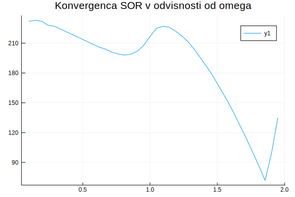

Iteracijske metode
V nalogi o minimalnih ploskvah smo reševali linearen sistem enačb
\[u_{i,j-1}+u_{i-1,j}-4u_{ij}+u_{i+1,j}+u_{i,j+1}=0\]
za elemente matrike $U=[u_{ij}]$, ki predstavlja višinske vrednosti na minimalni ploskvi v vozliščih kvadratne mreže. Največ težav smo imeli z zapisom matrike sistema in desnih strani. Poleg tega je matrika sistema $L$ razpršena (ima veliko ničel), ko izvedemo LU razcep ali Gaussovo eliminacijo, veliko teh ničelnih elementov postane neničelni in matrika se napolni. Pri razpršenih matrikah tako pogosto uporabimo iterativne metode za reševanje sistemov enačb, pri katerih matrika ostane razpršena in tako lahko prihranimo veliko na prostorski in časovni zahtevnosti.
Enačbe preuredimo tako, da ostane na eni strani le en element s koeficientom 1. Tako dobimo iteracijsko formulo za zaporedje približkov $u_{ij}^{(k)}$. Limita rekurzivnega zaporedja je ena od fiksnih točk rekurzivne enačbo, če zaporedje konvergira. Ker smo rekurzivno enačbo izpeljali iz originalnih enačb, je njena fiksna točka ravno rešitev originalnega sistema.
V primeru enačb za laplaceovo enačbo(minimalne ploskve), tako dobimo rekurzivne enačbe
\[u_{ij}^{(k+1)} = \frac{1}{4}\left(u_{i,j-1}^{(k)}+u_{i-1,j}^{(k)}+u_{i+1,j}^{(k)}+u_{i,j+1}^{(k)}\right),\]
ki ustrezajo jacobijevi iteraciji
Rekli boste, to je preveč enostavno, če enačbe le pruredimo in se potem rešitel kar sama pojavi, če le dovolj dolgo računamo. Gotovo se nekje skriva kak hakelc. Res je! Težave se pojavijo, če zaporedje približkov ne konvergira dovolj hitro ali pa sploh ne. Jakobijeva, Gauss-Seidlova in SOR iteracija ne konvergirajo vedno, zagotovo pa konvergirajo, če je matrika po vrsticah diagonalno dominantna.
Konvergenco jacobijeve iteracije lahko izboljšamo, če namesto vrednosti na prejšnjem približku, uporabimo nove vrednosti, ki so bile že izračunani. Če računamo element $u_{ij}$ po leksikografskem vrstnem redu, bodo elementi $u_{il}^{(k+1)}$ za $l < j$ in $u_{lj}^{(k+1)}$ za $l < i$ že na novo izračunani, ko računamo $u_{ij}^{(k+1)}$. Če jih upobimo v iteracijski formuli, dobimo gauss-seidlovo iteracijo
\[u_{ij}^{(k+1)} = \frac{1}{4}\left(u_{i,j-1}^{(k+1)}+u_{i-1,j}^{(k)}+u_{i+1,j}^{(k)}+u_{i,j+1}^{(k)}\right),\]
Konvergenco še izboljšamo, če približek $u_{ij}^{(k+1)}$, ki ga dobimo z gauss-seidlovo metodo, malce zmešamo s približkom na prejšnjem koraku $u_{ij}^{(k)}$
\[u_{ij}^{(k+1)} = (1-\omega)u_{ij}^{(k)} + \omega\frac{1}{4}\left(u_{i,j-1}^{(k+1)}+ u_{i-1,j}^{(k)}+u_{i+1,j}^{(k)}+u_{i,j+1}^{(k)}\right),\]
in dobimo metodo SOR. Parameter $\omega$ je lahko poljubno število $(0,2]$ Pri $\omega=1$ dobimo gauss-seidlovo iteracijo.
Primer
using Plots
U0 = zeros(20, 20)
x = LinRange(0, pi, 20)
U0[1,:] = sin.(x)
U0[end,:] = sin.(x)
surface(x, x, U0, title="Začetni približek za iteracijo")
savefig("zacetni_priblizek.png")
L = LaplaceovOperator(2)
U = copy(U0)
animation = Animation()
for i=1:200
U = korak_sor(L, U)
surface(x, x, U, title="Konvergenca Gauss-Seidlove iteracije")
frame(animation)
end
mp4(animation, "konvergenca.mp4", fps = 10)Konvergenca Gauss-Seidlove iteracije
Konvergenca
Grafično predstavi konvergenco v odvisnoti od izbire $\omega$.
using Plots
n = 50
U = zeros(n,n)
U[:,1] = sin.(LinRange(0, pi, n))
U[:, end] = U[:, 1]
L = LaplaceovOperator(2)
omega = LinRange(0.1, 1.95, 40)
it = [iteracija(x->korak_sor(L, x, om), U; tol=1e-3)[2] for om in omega]
plot(omega, it, title = "Konvergenca SOR v odvisnosti od omega")
savefig("sor_konvergenca.svg")
Metoda konjugiranih gradientov
Ker je laplaceova matrika diagonalno dominantna z $-4$ na diagonali je negativno definitna. Zato lahko uporabimo metodo konjugiranih gradientov. Algoritem konjugiranih gradientov potrebuje le množenje z laplaceovo matriko, ne pa tudi samih elementov. Zato lahko izkoristimo možnosti, ki jih ponuja programski jezik julia, da lahko za isto funkcijo napišemo različne metode za različne tipe argumentov.
Preprosto napišemo novo metodo za množenje *, ki sprejme argumente tipa LaplaceovOperator{2} in Matrix. Metoda konjugiranih gradientov še hitreje konvergira kot SOR.
using NumMat
n = 50
U = zeros(n,n)
U[:,1] = sin.(LinRange(0, pi, n))
U[:, end] = U[:, 1]
L = LaplaceovOperator{2}()
b = desne_strani(L, U)
Z, it = conjgrad(L, b, zeros(n, n))
println("Število korakov: $it")Število korakov: 34
Koda
Base.:* — Method*(L::LaplaceovOperator{2}, X::Matrix)množi matriko X z matriko za laplaceov operator.
Primer
julia> L = LaplaceovOperator{2}();
julia> L*[1 2 3 4; 5 0 1 6; 7 8 9 10]
3×4 Array{Int64,2}:
1 2 3 4
5 -1 4 6
7 8 9 10NumMat.conjgrad — Functionit = conjgrad!(A, b, x; tol=1e-10, maxit=1000)metoda konjugiranih gradientov za reševanje sistema enačb
\[Ax =b\]
Primer
julia> A = [2 1 0;1 2 1; 0 1 2]; b = ones(3);
julia> x0 = zeros(3);
julia> x, it = conjgrad(A, b, x0)
([-0.5, -1.0, -0.5], 2)NumMat.desne_strani — Methodb = desne_strani(L::LaplaceovOperator{2}, U::Matrix)Izračuna matriko desnih strani za Laplaceovo enačbo v 2D iz začetnih pogojev.
NumMat.iteracija — MethodU = iteracija(korak, U0, robni_indeksi)Poišče limito rekurzivnega zaporedja $U_n = korak(U_{n-1})$ z začetnim členom U0
Rezultat
Ulimita zaporedjaitštevilo korakov iteracija
NumMat.korak_sor — FunctionU1 = korak_sor(L, U0, ω = 1, spremeni_indekse = [])Izvede en korak SOR iteracije pri reševanju enačb
\[u_{i-1,j}+u_{i,j-1} - 4u_{ij} + u_{i+1,j}+u_{i,j+1} = 0.\]
Parametri
L::LaplaceovOperator{2}`U0::Matrixmatika vrednosti $u_{ij}$ω::Floatrelaksacijski parameter $\omega\in[0,2]$spremeni_indekse::Array{Tuple,2}seznam indeksov točk, ki niso podane kot robni pogoji
Rezultat
U1::Matrixvrednost matrike $U$ na naslednji iteraciji
Primer
julia> korak_sor(LaplaceovOperator{2}(), [1. 1 1; 2 0 3; 1 4 1])
3×3 Array{Float64,2}:
1.0 1.0 1.0
2.0 2.5 3.0
1.0 4.0 1.0